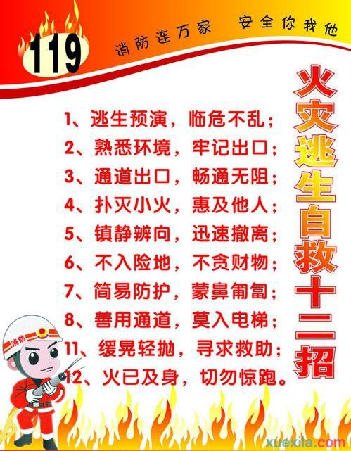

一旦火灾降临，在浓烟毒气和烈焰包围下，不少人葬身火海，也有人死里逃生。那么，遇到火灾应该如何逃生呢？有哪些火灾逃生自救方法？

发生火灾逃生自救的方法
1、如果身上的衣物，由于静电的作用或吸烟不慎，引起火灾时，应迅速将衣服脱下或撕下，或就地滚翻将火压灭，但注意不要滚动太快。一定不要身穿着火衣服跑动。如果有水可迅速用水浇灭，但人体被火烧伤时，一定不能用水浇，以防感染。
2、如果寝室、教室、实验室、宾馆、饭店、浴池、*等着火时，可采用以下方法逃生：
(1)毛巾、手帕捂鼻护嘴法因火场烟气具有温度高、毒性大、氧气少、一氧化碳多的特点，人吸入后容易引起呼吸系统烫伤或神经*中毒，因此在疏散过程中，应采用湿毛巾或手帕捂住嘴和鼻(但毛巾与手帕不要超过六层厚)。注意：不要顺风疏散，应迅速逃到上风处躲避烟火的侵害。由于着火时，烟气太多聚集在上部空间，向上蔓延快、横向蔓延慢的特点，因此在逃生时，不要直立行走，应弯腰或匍匐前进，但石油液化气或城市煤气火灾时，不应采用匍匐前进方式。
(2)遮盖护身法。将浸湿的棉大衣、棉被、门帘子、毛毯、麻袋等遮盖在身上，确定逃生路线后，以最快的速度直接冲出火场，到达安全地点，但注意，捂鼻护口，防止一氧化碳中毒。
(3)封隔法。如果走廊或对门、隔壁的火势比较大，无法疏散，可退入一个房间内，可将门缝用毛巾、毛毯、棉被、褥子或其它织物封死，防止受热，可不断往上浇水进行冷却。防止外部火焰及烟气侵入，从而达到抑制火势蔓延速度、延长时间的目的。
(4)卫生间避难法。发生火灾时，实在无路可逃时，可利用卫生间进行避难。因为卫生间湿度大，温度低，可用水泼在门上、地上，进行降温，水也可从门缝处向门外喷射，达到降温或控制火势蔓延的目的。
(5)多层楼着火逃生法。如果多层楼着火，因楼梯的烟气火势特别猛烈时，可利用房屋的阳台、水溜子、雨蓬逃生，也可采用绳索、消防水带，也可用床单撕成条连接代替，但一端要紧拴在牢固采暖系统的管道或散热气片的钩子上(暖气片的钩子)及门窗或其它重物上，再顺着绳索滑下。
(6)被迫跳楼逃生法。如无条件采取上述自救办法，而时间又十分紧迫，烟火威胁严重，被迫跳楼时，低层楼可采用此方法逃生，但首先向地面上抛下一些厚棉被、沙发垫子，以增加缓冲，然后手扶窗台往下滑，以缩小跳楼高度，并保证双脚首先落地。
3、火场求救方法当发生火灾时，可在窗口、阳台、阴台、房顶、屋顶或避难层处，向外大声呼叫，敲打金属物件、投掷细软物品、夜间可打手电筒、打火机等物品的声响、光亮，发出求救信号。引起救援人员的注意，为逃生争得时间。
火场逃生的原则
*火场逃生的原则是：安全撤离，救助结合。
安全撤离是指火场中的人员抓住有利时机，就近、就便，利用一切可以利用的地形、工具，迅速撤离危险区域。
救助结合，一是自救与互救相结合。在火灾现场，我们不仅要尽快撤离现场，还要积极帮助老、弱、病、残、妇女、儿童等疏散，切忌乱作一团，否则会堵塞通道，酿成大祸;二是逃生与抢险相结合。有时候火灾千变万化，如不及时消除险情，就可能造成更多人员伤亡。因此在条件许可时要千方百计地消除险情，延缓火灾发生的时间，减轻灾害发生的规模;三是救人与救物相结合。在所有情况下救人始终是*位的，决不要因为抢救个人贵重物品而贻误逃生良机。
发生火灾时逃生路径的选择
人们在火场中逃生时容易选择的路径，其大致有以下倾向：
(1)归宿性：即朝自己最熟悉的的地方逃生。
(2)日常习惯性：即从日常最常用的楼梯或出口逃生.
(3)敞开性：即向开阔或空间较大的方向逃生。
(4)就近性：向*进入视线或最近的方向逃生。
(5)本能回避危险性：本能的远离火和烟的方向。
(6)盲从性：追随大多数人逃生的方向。
(7)自认安全方向性：即朝着自己认为安全的路径逃生，如低层跳楼等。
(8)理智分析：即能够冷静分析险性，进退有度，上下有据，安全撤离。
火灾逃生自救注意事项
以上各种逃生倾向，当然最可取的是理智分析，但如何能够做到临灾不惧，处惊不乱，除了高素质的心理承受能力外，还需做到对下列3至5项熟悉掌握。
1、熟悉环境
无论对于熟悉或陌生的环境，我们都应养成对其结构了如指掌的习惯。例如对久居家庭、工作单位、所住的宾馆饭店、所去的*、剧院，特别是大型公共场所等，必须弄清其出口所在位置，同时对门窗、天窗、阳台等，要弄清其位置。其次要留心看一看太平门、避难间、安全出口的位置，报警器、灭火器的位置，有可能充做逃生器材的物品，如床单，毛巾、被罩、窗帘等等。只有这样才能做到有备无患，一旦发生火灾就可能顺利逃出火灾现场，保住性命。
2、立即采取防烟措施
当感到烟、火刺激时，无论附近有无烟雾，均要采取防烟措施。常用的防烟措施是用干、湿毛巾捂住口鼻，若用干毛巾则折叠层数越多，除烟效果越好。用湿毛巾除烟效果更佳，毛巾越湿效果越好。但若毛巾过湿，易造成呼吸困难。当毛巾含水量为本身重量的1.5―2.5倍时，由于毛巾的编织线因湿变细，空隙增大，除烟效果反而差于干毛巾。
使用毛巾捂口鼻时，一定要使过滤烟的面积尽量增大，确实将口鼻捂严，在穿过烟雾区时，即使感到呼吸阻力增大，也不能拿开毛巾，因为一旦拿开就可能导致中毒。
3、疏散确定逃离火场时，一定要沉着、冷静，克服慌乱心理，自我暗示，消除紧张心理。随后可先用毛巾捂住口鼻，选择一条切实可行的逃生路线。如经常使用的门、窗、走廊、楼梯、太平门、出口等，在打开门、窗之前，必须首先摸摸门、窗是否发热，如果已经发热，就不能打开，立即改弦更张，选择其它路径。
4、逃生时不要向狭窄的角落退避，如床下、墙角、桌子底下，大衣柜里等。在通过浓烟区时，要尽可能以*姿势或匍匐姿势快速前进，并用湿毛巾捂住口鼻。要注意随手关闭通道上的门窗，以阻止和延缓烟雾向逃离的通道跟踪流窜。如果身上衣服着火，应迅速将衣服脱下，就地翻滚，将火扑灭。应注意不要翻滚过快，更不要身穿着火服装跑动，如附近有水池等，可迅速跳入水中。
5、火场上不要轻易乘坐普通电梯。因为*，火灾中常常会断电而造成电梯“卡壳”，给救援工作增加难度;第二，电梯口直通大楼各层，烟气流入电梯通道极易形成“烟囱效应”，人在电梯内随时会被浓烟毒气熏呛而窒息。
6、如果不热，也只能小心地打开少许并迅速通过，然后快速关闭。当实在无法辨别方向，应该先向远离烟火的方向疏散，尽量不向楼上撤离，在疏散时，要树立时间就是生命，逃生*的思想。逃生要迅速，动作越快越好，切不要由于寻找、搬运某种物品而延误时间。